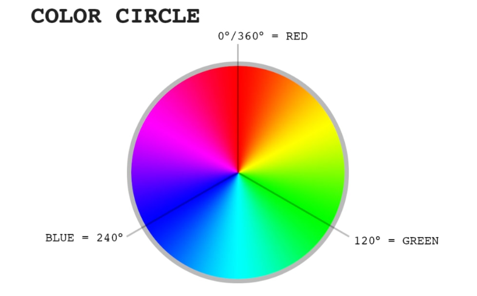
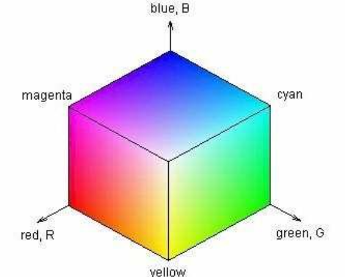

HSL står for "Hue, Saturation, Lightness"
Hue refererer til selv fargen, og er representert med et tall fra og med 0 til og med 360. Men det som er spesielt med hue er at den kan ha høyere verdier enn 360, men da blir verdien justert til å passe innen 0-360 grensen. Dette kan vi se ut i fra dette bildet, vi fortsetter bare rundt i en sirkel:
Saturation påvirker intensiteten til fargen. Saturation har en prosentverdi som går fra og med 0 til og med 100, hvor 0 gir en helt gråtonet farge, og 100 gir en helt utmettet farge.
Som navnet tilsier, påvirker lightness lysheten til fargen. Som saturation har lightness en prosentverdi som går fra og med 0 til og med 100. 0 gir svart, 50 gir den originale fargen, mens 100 gir hvit
RGB står for "Rød, Grønn, Blå", og er en additiv fargemodell. Dette vil si at for å lage en farge kombinerer man ulike mengder av rød, grønn og blå for å lage den ønskede fargen. Den er i stor grad brukt i maskin grafikk og display. Hver verdi av rød, grønn og blå blir representert med en byte, som er 8 bits. Siden datamaskiner bruker binært til å lagre informasjon, vil dette si hver verdi av rød, grønn og blå blir representert med et tall som er fra og med 0 til og med 255.
Hexadesmial er ikke en farge modell, men er allikevel nyttig å vite om. HEX bruker 16-tallsystemet til å representere farger. HEX baserer seg på RGB farge modellen for å lage farger. For å lage en farge kombineres tre par med hexidesimale verdier for rød, grønn og blå. Det hexadesmilae tallsystemt bruker tallene 0 til 9, i tillegg til A, B, C, D, E og F for å lage tall. Hver par verdi går fra 00 til FF, hvor 00 er minst mulig farge og FF er mest mulig farge. En fordel med HEX er at den gir en menneksevennlig og kompakt måte å lese farge representasjoner.
| Egenskaper | HSL | RGB |
|---|---|---|
| Additiv | NEI | JA |
| Subtraktive | NEI | NEI |
| Lett å lage ønsket farge | JA | NEI |
| Populære bruks områder | Grafisk design | Digitale skjermer og datagrafikk |
| Gøye å lære om | JA | NEI |